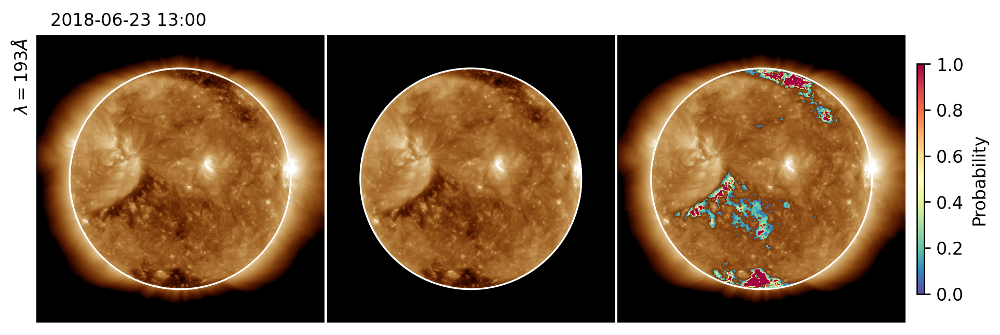
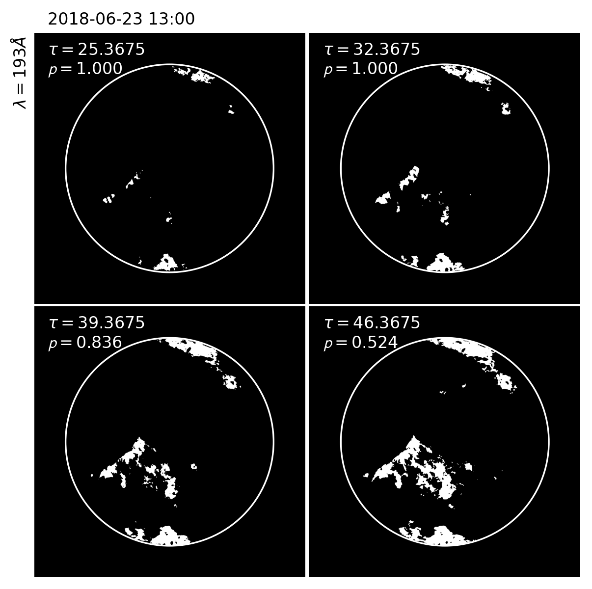

Coronal Hole Detection (CHIPS)
Probabilistic identification of coronal holes and boundaries in solar EUV images using the open-source pyCHIPS algorithm
Overview
This project is a part of COSPAR ISWAT — a global hub for collaborations addressing challenges across the field of space weather. The project centers on the development and application of CHIPS (Coronal Hole Identification using Probabilistic Scheme).
CHIPS: Coronal Hole Identification using Probabilistic Scheme
pyCHIPS is an open source Python-based model to identify Coronal Holes (CH) and associated boundaries in solar images. The model is used to estimate the probabilities of the Coronal Holes identified by the scheme.

Fig 1. Final CHIPS output of 19.3 nm 4k '.fits' image at different stages of the identification pipeline.

Fig 2. Different CH regions and associated probabilities for four different thresholds, illustrating the probabilistic nature of the boundary identification.
Unveiling the Magnetic Mysteries of the Solar Corona
The enigmatic dance of magnetic fields on the surface of the sun has long captivated solar physicists. To unravel the intricacies of these magnetic phenomena, a focused approach is imperative. A paradigm shift in the overarching objective directs attention toward a meticulous comparison between observed and modeled coronal holes, with the aim of refining magnetic models.
At the heart of this transformative approach lies the indispensable role of CHIPS. This innovative algorithm, designed to delineate coronal holes, is not merely a tool for identification but a key player in estimating uncertainties. In the realm of magnetic modeling, where precision is paramount, these uncertainties become invaluable.
Why the emphasis on uncertainties? The answer lies in the dynamic nature of the sun. Coronal holes — those enigmatic windows into the sun's magnetic soul — exhibit variations that are challenging to model accurately. CHIPS not only identifies these features but quantifies the certainty of its detections. This quantification becomes the linchpin in refining our magnetic models.
By incorporating uncertainties into our models, we equip ourselves with the tools needed to navigate the intricate magnetic landscape of the sun. This work advocates for a future where observed and modeled coronal holes converge, pushing the boundaries of our understanding and paving the way for more accurate magnetic models.